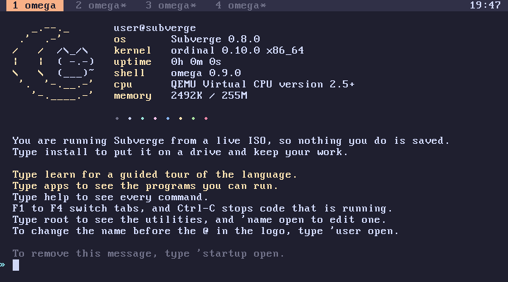

subverge
subvergeFeatures
- The shell is omega, a stack language.
- A line that fails is undone, and back undoes up to 64 lines that worked.
- Integers can be as big as 2^65536.
omegaandaleph0are values you can do arithmetic with (ordinals).- Code is compiled to x86-64 the second time it runs (JIT).
- Four tabs run at the same time.
- Everything runs in ring 0, so memory and I/O ports can be read and written from the prompt.
- There is no filesystem. An installed system saves after every line.
- Installed disks boot with Subverge's own bootloader.
Requirements
- QEMU. Subverge has never run on anything else.
- 256 MB of RAM for the virtual machine.
- A disk image you don't care about, if you want to install it.
- You need to know how to program already.
What it looks like
2 100 ^ . 1267650600228229401496703205376
[ dup * ] :sq defines sq
7 sq . 49
omega 1 + . ω+1
1 omega + omega = . 1
omega 1 - . ! ordinals only support + * and ^
